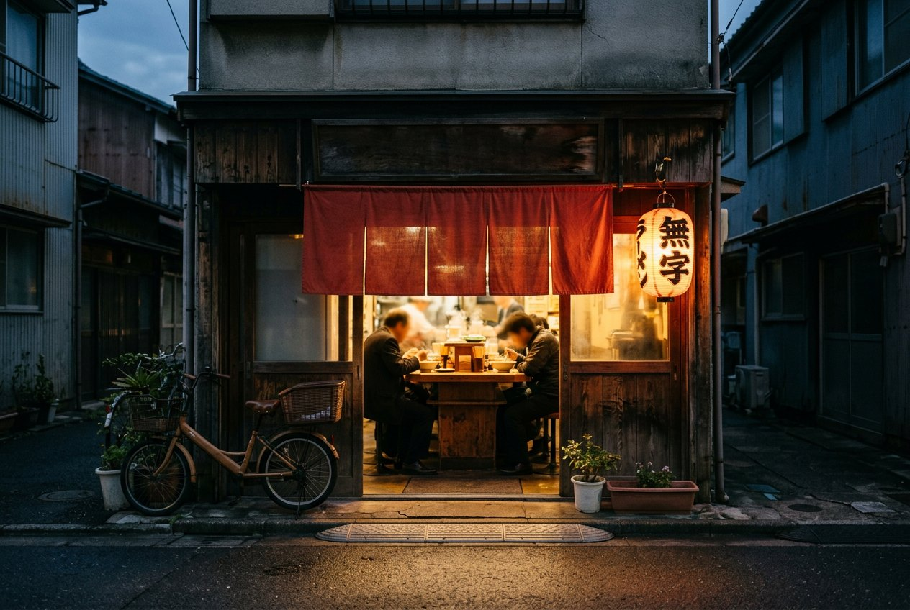

My name is Stas, and I really love ramen.
Enough that I went and read where it came from, learned to build a bowl at home, and keep a short list of the counters worth queueing for. No restaurant, no brand, no newsletter — just the three things I would tell you if you asked me over a beer.
Three pages, one dish. Start anywhere.

A short history
How a Chinese noodle soup arrived by ship, survived a war on cheap wheat and became the dish people queue an hour for.
Read the story
Shoyu, at home
Clear chicken broth, a soy tare that does the seasoning, and eight steps — five of them done long before anyone sits down.
Cook a bowl
Where to eat it
Five counters worth the trip — two small rooms in Tel Aviv, three institutions in Japan — and how to behave at them.
Find a counter